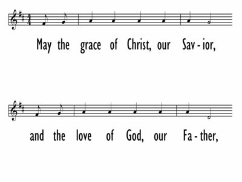

|
|
【願救主基督的恩惠】 |
|
May the grace of Christ, our Savior, |
願求主基督的恩惠， |
|
https://digitalsongsandhymns.com/songs/5220
 |
|
|
|
|
-

世紀頌讚567首(Grace, Love and Fellowship) 願求主基督的恩惠，與天父豐盛的大愛， https://youtu.be/Uyn6h50U94Q - Grace, Love and Fellowship
https://youtu.be/ObQahr_wn-c
A song of blessing for all... Words & Music: Tom Fetttke
| Text: | Grace, Love, and Fellowship |
| Author: | Tom Fettke |
| Tune: | CANE PEAK |
| Composer: | Tom Fettke |
| Short Name: | Tom Fettke |
| Full Name: | Fettke, Tom, 1941- |
| Birth Year: | 1941 |
Thomas E. Fettke (b. Bronx, New York City, 1941)
Educated at Oakland City College and California State University, in Hayward, CA, Fettke has taught in several public and Christian high schools and served as minister of music in various churches, all in California. He has published over eight hundred compositions and arrangements (some under the pseudonyms Robert F. Douglas and David J. Allen) and produced a number of recordings. Fettke was the senior editor of The Hymnal for Worship and Celebration (1986).
Bert Polman
| Text Information | |
|---|---|
| First Line: | May the grace of Christ, our Savior |
| Title: | Grace, Love, and Fellowship |
| Author: | Tom Fettke |
| Meter: | Irregular |
| Language: | English |
| Publication Date: | 1991 |
| Scripture: | |
| Copyright: | 1986 WORD MUSIC (div. of WORD, INC.) |
| Tune Information | |
|---|---|
| Name: | CANE PEAK |
| Composer: | Tom Fettke |
| Meter: | Irregular |
| Key: | D Major |
| Copyright: | 1986 WORD MUSIC (div. of WORD, INC.) |
TOM FETTKE
Tom Fettke is a composer, arranger and producer of music and recordings for the church and school. His published works and recordings number in the hundreds. His classic choral work THE MAJESTY AND GLORY OF YOUR NAME is sung by thousands of church and school choirs around the world. For over 50 years, the development of relevant, practical and dynamic choral music has been his passion and his profession.
Tom holds degrees from Oakland City College and California State University at Hayward. He holds a California Lifetime Music Credential in Secondary Music. For a number of years he taught vocal music in California’s public school systems. He was a church choir director and minister of music in churches large and small for over 30 years. He was also Director of Choral Activities and Supervisor of Music for the Redwood Christian School System in Castro Valley, California.
Tom was the creator and Senior Editor of THE HYMNAL for Worship and Celebration. Since its release in 1986, over three million copies have been placed in the pews of today’s church. He was also the Senior Editor of THE CELEBRATION HYMNAL, which has been heralded as one of the most innovative “tools” for ministry in the history of the church.
Tom and his wife Jan reside in Nashville, Tennessee. The have two married sons, nine grandchildren and two great-grandchildren.
https://www.halleonard.com/biography/131/tom-fettke
要為人祝福
經文：民數記第六章22至27節
耶和華曉諭摩西說：你告訴亞倫和他兒子說：你們要這樣為以色列人祝福，說：“願耶和華賜福給你，保護你。願耶和華使祂的臉光照你，賜恩給你。願耶和華向你仰臉，賜你平安。”他們要如此奉我的名為以色列人祝福；我也要賜福給他們。（民六：22-27）
神吩咐摩西教導亞倫（和他兒子）說：你們要這樣為以色列人祝福（祝福時要這樣）說：1.願耶和華賜福你，保護你。2.願耶和華賜恩給你。3. 願耶和華賜你平安。“願”就是願望或祈求之意，所以，為人祝福，就是向神為人求福，求恩，求平安，求神賜福，賜恩，賜平安。神再次的囑咐說：“你們要如此奉我的名為以色列人祝福”，可見“為人祝福”是極其重要的，而且神還加上一個應許說：“我也要賜福給他們”。
一．“祝”與“賜”之異同
恭讀上述經文，見有“祝福”與“賜福”之別，令人對譯經者由衷的佩服，因他們能譯出清晰的中文正意，將基督教的信仰清楚表達出來。原來“祝”與“賜”字是有不同意義之表達的。
“祝”即“願”也，是願望，祝願，祝賀，期望，祝禱，祈福，祝謝，是代人求恩福的禱告，是人對人至善至美的期望之意。也是因為人的智慧，能力，生命等都是有限的，所以“人”僅能為人祝福。例如，“他們就給利百加祝福說：我們的妹子啊，願你作千萬人的母！”（創二四：60）
“賜”即“給”也，是賜給，施與，恩惠，賞賜，施贈，是由上而下的施與，是顯示大有權能的。例如：“願全能的神賜福給你，使你生養眾多，成為多族”（創二八：3），又如：“各樣美善的恩賜和各樣全備的賞賜，都是從上頭來的，從眾光之父那�堶陘U來的”（雅一：17）。
所以，“祝”和“賜”兩個字所表達的意義完全是不同的。在聖經之中，有關“祝”的經文可見：
我勸你，第一要為萬人懇求，禱告，代求，祝謝。（提前二：1）
你們中間若有缺少智慧的，應當求那厚賜與眾人，也不斥責人的神，主就必賜給他。（雅一：5）
在耶和華面前事奉祂，奉祂的名祝福，直到永遠。（代上二三：13）
還有耶穌在世時為五餅二魚祝謝（太一四：19），為小孩祝福（太一九：13-15），升天之前為門徒祝福（路二四：50-51）。這些祝福都很清楚顯示出是“身為人子”的身分，耶穌特為人獲得好處而向神祈禱求恩福，意思是很清楚的。
而有關“賜”者，經文可見：
耶和華所賜的福使人富足…（箴一○：22）
你們這蒙我父賜福的，可來承受那創世以來為你們所預備的國。（太二五：34）
中文字意和經文內容均極清楚顯示出“祝”與“賜”是完全不同的。
二．“祝”與“賜”的基本原則
譯經者使用“祝福”與“賜福”，顯示出兩個基本原則：
第一，凡是由人對人的願望，祈福，祝願，代人求恩福好處的，均採用“祝福”。例如：
他們就給利百加祝福說：願你作千萬人的母…（創二四：60）
他就上前與父親親嘴，他父親一聞他衣服上的香氣，就給他祝福，說：“我兒的香氣如同耶和華賜福之田地的香氣一樣。願神賜你天上的甘露，地上的肥土，並許多五穀新酒；…為你祝福的，願他蒙福。”（創二七：27-29）
第二，凡是由神給與人的恩惠，或人向神求任何的好處，由上而下的施與，均採用“賜福”，例如：
“我必叫你成為大國。我必賜福給你，叫你的名為大；你也要叫別人得福。”（創一二：2）
他為亞伯蘭祝福，說：“願天地的主，至高的神賜福與亞伯蘭。”（創一四：19）
祭司是人，所以為亞伯蘭祝福。天地的主是神，故而賜福亞伯蘭。請再讀兩處經文：
“願全能的神賜福給你，使你生養眾多，成為多族。”（創二八：3）
雅各對約瑟說：“全能的神曾在迦南地的路斯向我顯現，賜福與我，對我說：我必使你生養眾多，成為多民，又要把這地賜給你的後裔，永遠為業。”（創四八：3-4）
在聖經�堙妖牯痋酉P“賜福”的經文，均是按照以上兩個原則運作，非常清楚，旗幟鮮明。
三．神是萬福之本
經云：“他們要如此奉我的名，為以色列人祝福，我也要賜福給他們。”（民六：27）“為你祝福的，我必賜福與他…”（創一二：3）很清楚說明了神不僅吩咐人要為人祝福，且應許人“祂要賜福，祂必賜福”給人，顯示出神就是萬福的源頭，如果人肯遵命去為人祝福，神就必定按照祂的應許“賜福”與人。詩人說：“…你是我的主；我的好處（福氣）不在你以外。”（詩一六：2）又說：“因為，在你那�埵野糽R的源頭…”（詩三六：9）這都說明神就是福氣和生命的源頭，是萬福之本，是賜福給人的神。保羅提到創造天，地，海和其中萬物的永生神“為自己未嘗不顯出證據來，就如常施恩惠，從天降雨，賞賜豐年，叫你們飲食飽足，滿心喜樂”（徒一四：17），更說明神是滿有慈愛，有豐盛恩典的神。“那賜諸般恩典的神”（彼前五：10），就是萬福之本源。
所以許多教會在聚會完結前，都會齊唱“三一頌”，歌詞的第一句是：“讚美真神萬福之根”（或譯“讚美上主萬福之本”或“讚美一神萬福之源”），這是基督徒之宣信，讚頌神是萬福之根，確認神是萬福之源，是賜福的神（與使徒信經的信互相輝映），故此我們讚美祂。若果僅是祝福人的神，何以配受我們讚美祂為萬福之根呢？但賜福的神是配受我們讚美的，因祂是全能的父，是創造天地萬物的主，是萬福之本源。世俗人皆知福由天賜，故有“天官賜福”之木牌，是表示尊敬天的意義。基督徒更加要懂得尊崇敬拜那位創造天地萬物的主，就是萬福之本源。
四．祝福人人可行
經云：“你們要這樣為以色列人祝福”，“他們要如此奉我的名為以色列人祝福”（民六：23,27）。清楚看出這是神的吩咐，神的命令，就是“要奉神的名為人祝福”，所以我們要為人祝福。誠如耶穌教導門徒說：“咒詛你們的，要為他祝福！凌辱你們的，要為他禱告！”（路六：28）保羅亦有教導說：“逼迫你們的，要給他們祝福；只要祝福，不可咒詛。”（羅一二：14）每一個屬神的子民，基督的門徒，皆要為人祝福和禱告。
教會常有牧師（如同祭司）為會眾祝福，願望眾人得着上主的恩福，是代人求恩的祝禱。人因為能力，智慧，生命和一切作為均極有限，故而只能為人祝福。例如：友人遠遊，我們僅能祝福他們“一帆風順，一路平安”，但“風順”與“平安”皆非你與我能給與友人的，惟有願望那位厚賜與眾人的神，賜給友人風順和平安之福。
筆者曾出席某區的聯合培靈會，當主席宣布請某牧師祝福時，該牧師上台站立竟然對會眾說：“請接受上帝的祝福”，真令人啼笑皆非。應該是牧師的祝福吧？怎可能是上帝的祝福呢？求神憐憫赦免。
五．列舉錯誤例證
不少基督徒忽略了正確的中文用法，例如：“求神祝福教會，願上帝祝福你們，這是神的祝福，神所祝福的工作，神祝福的奇妙，得到神的祝福，神大大的祝福，願上帝祝福香港，神祝福我們一生，神時常祝福我們，願主祝福讀者，賴主祝福，求主祝福今日的信息，在神的祝福之下，信靠神的保守及祝福，神給他們許多祝福，只求神的祝福，神祝福世界華人教會”等等，以上都是摘自各教會，機構，神學院等的通訊，周報，刊物，歌詞，佈道單張，屬靈書籍，以及在電腦網頁和光碟上的資料。這些祝福句雖然均極美，但可惜卻全是錯用了“祝”字。若將“祝”字換取“賜”字就符合中文正確的意義表達，也最符合聖經的信仰了。
六．“求主祝福”之誤應改正
不少人習慣用“願主祝福你，願神祝福你”，這是不知始於何時的“習非成是”，造成了極普遍流行的錯誤而不自知。惟願眾基督徒加以留意（要重視中文聖經，重視聖經真理，更要重視聖經信仰），要認識神是全能的父，是創造天地萬物的主，是萬福之源頭，是賜福的神。與各位已恭讀過多處經文，明白了祝福與賜福之分別，若再“習非成是”的說“神祝福”，就不再是無心之失，而是公開的將神貶低降格，羞辱了上帝。錯用一字，即“差之毫釐，謬以千里”，豈可不慎？盼望我們在主前謙卑，勇敢改正錯誤的用法。
願聖靈光照各人，讓我們清楚認識獨一全能的神，是創造天地的主，是萬福之本源，是賜福人的神，如經曰：“耶和華向來眷念我們，祂還要賜福給我們，要賜福給以色列的家，賜福給亞倫的家。凡敬畏耶和華的，無論大小，主必賜福給他。”（詩一一五：12-13）惟願神賜福各位讀者，並祝以馬內利。
https://www.goldenlampstand.org/glb/read.php?GLID=15804
分享祝福經文
參考聖經：
每個人的一生都會經歷很多事情，其中滿了酸甜苦辣，在臨到苦難的時候，都會有脆弱的一面，都希望得到鼓勵和安慰。下面分享的關於祝福的聖經經文，希望能給你和你身邊的朋友帶去鼓勵和安慰。
民數記 6:24-26
願耶和華賜福給你，保護你。願耶和華使他的臉光照你，賜恩給你。願耶和華向你仰臉，賜你平安。
詩篇 134:3
願造天地的耶和華，從錫安賜福給你們！
詩篇 128:5
願耶和華從錫安賜福給你！願你一生一世看見耶路撒冷的好處！
哥林多後書 13:14
願主耶穌基督的恩惠、神的慈愛、聖靈的感動，常與你們眾人同在！
何西阿書 6:3
我們務要認識耶和華，竭力追求認識他。他出現確如晨光，他必臨到我們像甘雨，像滋潤田地的春雨。
申命記 28:1-6
你若留意聽從耶和華——你神的話，謹守遵行他的一切誡命，就是我今日所吩咐你的，他必使你超乎天下萬民之上。你若聽從耶和華——你神的話，這以下的福必追隨你，臨到你身上：你在城裡必蒙福，在田間也必蒙福。你身所生的，地所產的，牲畜所下的，以及牛犢、羊羔，都必蒙
崇拜主席須知 12-1-2016
|
項目 |
負責人 |
例子 |
意義及注意事項 |
|
崇拜前 |
牧師 |
安靜祈禱 |
崇拜前五分鐘齊集禱告 |
|
|
主席 |
弟兄姊妹，早晨!請大家將身上的響鬧裝置關上，以致我們可以專心敬拜神！ |
溫馨提示 |
|
崇拜開始 |
主席 |
崇拜開始，請一同站立！ |
宣告崇拜開始，請會眾肅立， 序樂聲一起，司職人員即自行進堂。 |
|
宣召 |
主席 |
來啊，我們要屈身敬拜，在造我們的耶和華面前跪下。因為祂是我們的 神，我們是祂草場的羊，是祂手下的民。惟願你們今天聽祂的話。 |
以神話語宣召神子民進入敬拜
|
|
祈禱 |
主席 |
同心祈禱 範例： “神阿，祢的眾兒女來到祢的面前，獻上敬拜，求主悅納。除去我們心中的罪污，以致我們可以帶著手潔心清的來到祢的面前，奉主名求，阿們。” |
主席以禱告帶領會眾向神稱謝讚美，讓心靈倒空雜念，放下重擔，進入敬拜。領禱不應臨場發揮，最好先把禱文大意寫下及練習，充分準備。 禱告以崇敬、頌讚為主，稱頌三一神威榮，讚美、感謝其位格屬性、大能作為(創造、救贖、慈愛、公義……)。 無需代禱祈求，無需長篇禱告。 |
|
詩歌讚美前 |
主席 |
在唱詩時如不方便站太久，可隨時坐下！ |
主席提醒不便站立太久者可按需要坐下後， 無需特別邀請領詩自行上前。 |
|
詩歌讚美 |
領詩 |
|
|
|
讀經 |
主席 |
請翻開本堂聖經xxx頁 以弗所書6章10-20節 [經文內容] |
主席應留意艱深中文之讀音，充分練習，達致讀經時流暢。如非講員的安排或跟講員溝通好，請勿以啟應／輪流方式頌讀。 |
|
證道 |
主席 |
今天[講員名宇]牧師/傳道/姑娘所宣講的題目是＂xxxxxxxx＂ |
[外來講員需作簡介:今日有[機構/教會名稱]的[講員名宇]牧師/傳道/姑娘證道，題目是xxxxxxxx]
|
|
回應詩
|
|
|
主席無須交接，詩歌敬拜隊自行上台帶領 [主餐及外來講員時會沒有這項] |
|
主餐 |
牧師 |
|
|
|
奉獻 |
主席 |
奉獻是基督徒對神感恩回應，亦是我們當盡的本份.紅袋是常費奉獻，綠袋是[按程序表指示項目] |
|
|
節期經文或 經課誦讀 |
主席 |
請翻開程序表第一頁，我們一同誦讀節期經文 [按程序表節期名稱及經文] |
|
|
牧禱 |
牧師 |
|
|
|
歡迎 及家事分享 |
牧師 |
|
歡迎來賓後作重點報告： 需要兄姊關注的事項，需要大多數人留意之事工。 |
|
祝福 |
牧師 |
|
牧師給會眾祝福，牧師不在則全體念誦主禱文。 |
|
祝福歌 |
主席 |
第一節我們一同唱，"第二節可以彼此問安。 |
主席須熟習祝福歌帶領，詩歌敬拜隊協助。第一節會眾同唱，第二節互相握手、問安、彼此祝福。 |
補充資料
崇拜主席角色
崇拜主席的任務是使崇拜聚會的整體表現能配得上呈獻給神，並幫助會眾在敬拜中體現與神相交的真實，又領會神在崇拜中所賜下的信息和恩惠。
崇拜主席不是聚會的司儀，無須加入不必要的間場說話，刻意製造氣氛，切勿於某項程序完成後加上多謝或評論等回應。主席也不是報幕員，無須要常常說現在是XX的時間，將時間交給XX。主席更不是研討會的回應講員，切勿於講道後加上回應或作總結。
主席要帶領一個以神為中心的崇拜
|
反面例子 |
正面例子 |
|
現在由XX牧師對我們講道 |
在崇拜中，神要藉著XX牧師把神的話語向我們宣講 |
|
現在唱最後一首歌 |
現在以聖詩第X首頌讚神 |
|
現在到收奉獻的時間 |
奉獻是我們對神表示崇敬的一種具體行動 |
|
現在請牧師祝福 |
請以信心接受神的賜福 |
不合宜或不必要的說話例子
|
不合宜的說話例子 |
不必要的說話例子 |
|
唱隻歌/唱支歌仔 |
近來大家身體好嗎？ |
|
要企喺度唱 |
完了一個禮拜，大家梗係好累囉！ |
|
我地要唱得勁啲 |
今朝番到嚟，唔知點解好似周身唔聚財！ |
|
崇拜中請勿釣魚 |
對唔住，今日崇拜長了。大家梗係肚子打鼓了 |
|
番到呢度好happy |
現在是敬拜的時間，將時間交給敬拜隊 |
|
我地而家睇聖經 |
我見到有人放蚊，乜好累咩？ |
禱文
崇拜祈禱是公禱，要簡潔、客觀。敬拜要以三一神為中心，認罪要真誠，感恩要厄要，旨在能帶領會眾專心進入敬拜。它不是教導、不是代求、不是指控。主席應多讀有詩意及美感的短禱文，崇禱部可提供建議禱文。
範例：「全能的創造主，我們今天早上來到祢的面前，獻上我們讚美和感謝謝。祢是配得一切榮耀頌讚的主，幫助我們帶著一個歡喜快樂的心宣揚祢慈愛和能力。讓我們在敬拜中與祢更加的親近，更明白祢的心意。求祢悅納我們從心底裡向祢獻上的讚美。奉耶穌名求，阿們。」
讀經
宜先作好準備，由自己誦讀，不宜随意請會眾輪讀或以啟應方式讀：例如弟兄讀單節、姊妹讀雙節，因為並非每一段經文都適合以啟應方式讀。另外，應避免自己或請大家重讀某些經文，因為這樣容使大家誤以為這些是整段經文的中心或主旨，記者講道經文是講員選的，我們不一定知道他所宣講的中心信息。
講道
介紹外來講員前可先向主任牧師了解有關資料，介紹應以其全職事奉崗位為主，精短為要，不必介紹其銜頭、學歷、其他義工/公職(牧師、博士等稱呼除外)，也無須說恭維的話，因為他/她只是神的代言人，神才是崇拜的中心。講道後也無須作出回應或作總結，這不是崇拜主席的責任。
https://www.ntkbc.com.hk/worship_functional?view=details&pkey=32